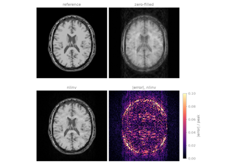

Gallery source pages#
The pages sphinx-gallery generates from the example scripts. The documentation presents them through Examples and the Course and Tours pages under it.
Basics#
You start from the data a scanner gives you, multichannel k-space, and end with an image. Lesson 1 shows how BART’s arrays look as PyTorch tensors and how you call a BART command on them. Lesson 2 reconstructs an undersampled Cartesian scan through the three steps the rest of the Course builds on: channel compression, coil sensitivities from ESPIRiT, and a regularized SENSE reconstruction. Encoding operators derives the signal model, and Data layout lists the array layouts.
Parallel imaging#
A SENSE reconstruction is only as good as its coil sensitivities. In lesson 3 you estimate them from the autocalibration region, by direct division and by ESPIRiT, and see what a poor estimate does to the image. In lesson 4 the calibration region is too small for that, and you estimate the image and the sensitivities together by nonlinear inversion. If your channels carry correlated noise, whiten them first: the tour Noise prewhitening shows how. Encoding operators and Model-based reconstruction give the background.

4. Joint reconstruction of image and sensitivity maps
Regularization#
Past the acceleration your coils can support, SENSE amplifies noise and leaves aliasing behind. A regularizer adds what you know about the image. In lesson 5 you compare Tikhonov, wavelet and total-variation penalties on one scan and choose their weight. In lesson 6 you write the same reconstruction yourself, as an encoding operator and a solver, which is how you reconstruct anything BART has no command for. Regularizers and Solvers explain the penalties and the iterations.
Non-Cartesian imaging#
Radial and spiral trajectories sample k-space off the grid, so the Fourier transform becomes a NUFFT. In lesson 7 you meet trajectories, the NUFFT, density compensation and the point spread function. In lesson 8 you reconstruct an undersampled golden-angle radial scan by non-Cartesian SENSE, with coil sensitivities estimated from the radial data themselves. The tour Dynamic golden-angle radial MRI extends it to a time series. Non-Cartesian transform defines the transform and its accuracy.
Model-based reconstruction#
To map \(T_2\) you usually reconstruct one image per echo and fit a decay in every voxel. In lesson 9 you put the decay into the forward model instead, and fit the maps directly to the multi-echo k-space, so that every echo constrains the same unknowns. The tours Subspace-constrained T1 mapping and Parameter maps from scanner images show the linear subspace alternative and a fit to DICOM images. Model-based reconstruction compares the formulations.
Learned regularization#
A learned reconstruction keeps the encoding operator and the data consistency of an iterative reconstruction, and puts a network where the regularizer was. In lesson 10 you take a pretrained denoiser and use it inside BART’s ADMM and FISTA, with no training at all: plug-and-play. In lesson 11 you train a network through BART’s ADMM, end to end (MoDL). The learning workflows among the Tours go further. Learned reconstruction explains where a network enters a reconstruction.
Tours: acquisition and corrections#
Corrections you apply to the data before the reconstruction, or to the image after it, each on its own. Most of them simulate the artefact from a known truth, so you can see how much the correction recovers; the EPI susceptibility tour corrects measured data instead, and checks the result against an independent field map.
Remove readout oversampling, and compare Fermi and Hann apodization.
Correct the Nyquist ghost of an EPI train, and regrid a ramp-sampled readout.
Estimate the receive bias field of a head array with N4.
Undo the distortion of gradient nonlinearity from the coil’s spherical-harmonic coefficients.
Deblur a spiral image off resonance, by multifrequency interpolation and by a time-segmented reconstruction.
Track rigid head motion from three orthogonal navigator planes.
Correct the susceptibility distortion of a 3 T EPI pair with reversed phase encoding, downloaded from OpenNeuro.
Prewhiten correlated channel noise, and measure the SNR it buys.


Tours: dynamic and quantitative workflows#
The Course’s encodings applied to a time series and to quantitative mapping.
Reconstruct a dynamic contrast-enhanced series from one continuous golden-angle radial scan, with total variation along time.
Map \(T_1\) from one continuous inversion-recovery scan, by reconstructing the coefficients of a subspace of the signal curves.
Fit a \(T_2\) decay to magnitude images read from DICOM, as the scanner exports them, and write the map back.
Non-Cartesian transform and Model-based reconstruction give the background.
Tours: learning workflows#
What comes after lessons 10 and 11, when you train and use a learned regularizer on real problems.
Networks for complex multi-contrast volumes, applied patch by patch.
Training an unrolled network in stages, within the memory of one iteration.
Self-supervised training from undersampled data alone.
Plug-and-play with a noise level that anneals over the iterations.
Voxel-wise uncertainty, calibrated.
Learned reconstruction explains where a network enters a reconstruction.